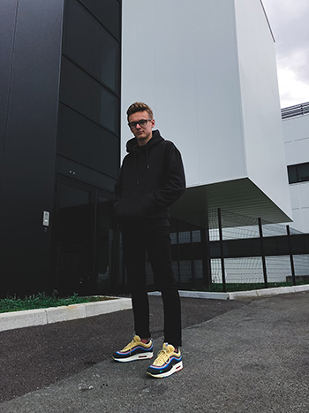

Accueil
Biographie
Compétences
Réalisations
Commentaires
Bienvenue sur mon PortFolio
Biographie
Je suis actuellement étudiant en Sup De Web 3 (SDW3) de 24ans à Angouleme, qui forme au métier de chef de projet web. Et je travail à SolocalMS en Alternance.
Consulter Mon CV
